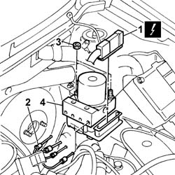

3340A12 A'B.S. system. - electronic and hydraulic CONTROL UNIT R.R.
- Path
- Procedures > 33 BRAKING SYSTEM > 3340 ANTI-LOCK BRAKE SYSTEM (ABS) > 3340A abs check/adjustment devices > 3340A12 A'B.S. system. - electronic and hydraulic CONTROL UNIT R.R.
- Kind
- repair procedure (removal / refitting; the operation number is the code)
- Applies to
- all engines; all production periods
- Interactive page
- https://sloeber94.github.io/elrnDB-fPnd/en/#/2752755
Applies to: all engines; all production periods
 Removing
Removing
 Refitting
Refitting3330C34 brake fluid reservoir - r + r and wash inside - versions with r/h drive and abs
5530B56 BATTERY DRIP TRAY COVER - R.R.
5530B52 Battery DRIP TRAY/SUPPORT - R.R.
1048A10 air cleaner filtering element - replace
3330C14 (PUMP) - MASTER CYLINDER .R.R for versions with A.B.S.
1. Disconnect the electrical connection from the A.B.S. hydraulic and electronic control unit.
 | Name | Connector |
|---|---|---|
1 | ABS control unit | M50 |
2. Unscrew the pipe connectors from the hydraulic and electronic control unit.
3. Unscrew the retaining nuts.
4. Remove the ABS hydraulic and electronic control unit.

Applies to: all engines; all production periods
Refitting
RemovingFit the A.B.S. hydraulic and electronic control unit in its seat and tighten the nuts to the specified torque.
 | Fastening | Component | Ø | Value (daNm) |
|---|---|---|---|---|
- | Nut | HYDRAULIC AND ELECTRONIC CONTROL UNIT | M6 | 0.8 |
Connect the pipes to the A.B.S. hydraulic and electronic control unit and tighten the connectors to the specified torque.
| Fastening | Component | Ø | Value (daNm) |
|---|---|---|---|---|
- | Connector | ABS CONTROL UNIT RIGID FRONT BRAKE PIPES../ | M10 | 1,6 |
| Fastening | Component | Ø | Value (daNm) |
|---|---|---|---|---|
- | Connector | ABS CONTROL UNIT RIGID FRONT BRAKE PIPES../ | M12 | 1.6 |
Connect the electrical connection to the A.B.S. hydraulic and electronic control unit.
| Name | Connector |
|---|---|---|
- | ABS control unit | M50 |
3330C14 (PUMP) - MASTER CYLINDER .R.R for versions with A.B.S.
1048A10 air cleaner filtering element - replace
5530B52 Battery DRIP TRAY/SUPPORT - R.R.
5530B56 BATTERY DRIP TRAY COVER - R.R.
3330C34 brake fluid reservoir - r + r and wash inside - versions with r/h drive and abs
0010T64 brake and or clutch fluid check level and top up as necessary
Topics linked from this page (8)
- 0010T64 brake and or clutch fluid check level and top up as necessary
- 0010T65 hydraulic brake system bleed air
- 1048A10 air cleaner filtering element - replace
- 3330C14 (PUMP) - MASTER CYLINDER .R.R for versions with A.B.S.
- 3330C34 brake fluid reservoir - r + r and wash inside - versions with r/h drive and abs
- 5530B10 battery - r+r
- 5530B52 Battery DRIP TRAY/SUPPORT - R.R.
- 5530B56 BATTERY DRIP TRAY COVER - R.R.
Topics that link to this page (15)
- K60 ABS FAILURE WARNING LIGHT ON
- Z61 EOL CONFIGURATION CHANGED ERROR
- Z63 SPEED SENSORS ERROR PLAUSIBILITY ERROR
- Z64 ABS CHARGE/DISCHARGE VALVE ERROR
- Z65 MAIN AND PILOT VLVX/USVX VALVE ERROR
- Z66 PUMP MOTOR ERROR
- Z67 VALVE RELAY ERROR
- Z84 VARIANT CODING ERROR
- Z85 IMPOSSIBLE TO ENTER FAULT DIAGNOSIS AT ABS CONTROL UNIT
- Z94 ELECTRIC DRIVE NODE ERROR
- 3330D14 brake servo - r+r for versions with abs - includes separation from master cylinder (pump)
- 3340A13 abs central mount - r r
- 3340B55 central brake pipe to lh - r r
- 3340B56 RIGID PIPE from hydraulic CONTROL UNIT to RIGHT FRONT BRAKE - R.R.
- 3340B62 rear connection central pipe - r r